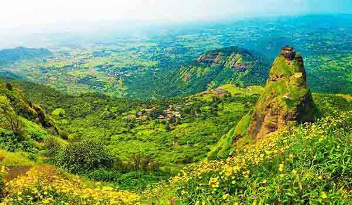

Prabalgad Fort is located in the Raigarh district of Maharashtra. It is a spectacular fort in the embrace of the Sahyadri mountain range along the western ghats. The fort is at an elevation of 700 m above sea-level on a plateau and provides vivid sight of the Irshalgad fort and the Kalyan fort. For this reason, it also had a great historical significance as it was used as a watchtower.
The Prabalgad terrain is covered with a green blanket of thickets. The fort is located in the mid way of Panvel and Matheran. Trekking up to the fort will be an amazing twist and adventure to your trip but you need to be very careful as the way to the fort is very steep. Even if you are a non trekker this place is amazing for sightseeing. There are some beautiful rivers flowing along the Durg namely, the Ulahas River, Patalganga River and the Gadhi River.
The panoramic view from the fort hill top is really mesmerizing. The surrounding of the fort being picturesque is ideal for photography. Apart from exploring the Prabalgad fort, you can enjoy the village life of the place and take a walk in the jungle trails. The beauty of the nature here is very appealing.
How to Reach: The place is well connected by railway, airway and road transportation. After reaching the Mumbai airport, you can hire a taxi which will drop you to the fort place. The Panvel railway station is the nearest station if you are travelling by rail. From this station buses and cabs are available which drop you to the fort.